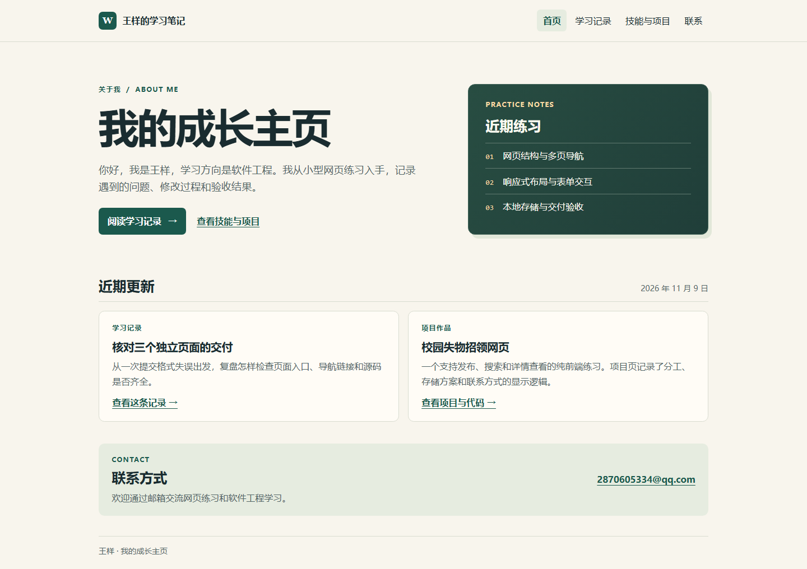
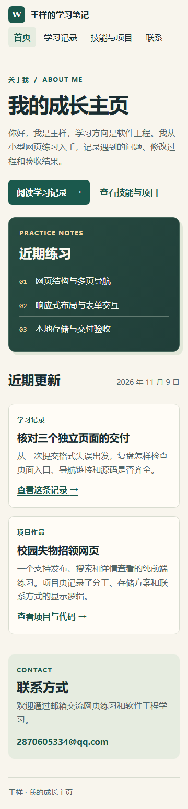

HTML 页面结构
我把首页、学习记录和技能与项目分别放进三个 HTML 文件。共用导航用相对路径连接各页，每页都标明当前所在位置。
查看首页SKILLS & PROJECTS
我整理网页练习的需求和评审反馈，用 AI 辅助实现，再用页面、截图和代码核对结果。
我把首页、学习记录和技能与项目分别放进三个 HTML 文件。共用导航用相对路径连接各页，每页都标明当前所在位置。
查看首页我用 CSS Grid 把首页介绍与练习笔记并排。屏幕窄到 360 像素时，媒体查询将它们和两张近期更新卡片改为单列，导航排到站名下方。
对比实测截图我给学习条目加上主题标记。在目前的记录里，选「前端交互」只显示失物记录，计数变为 1 条。切回「全部记录」可恢复完整列表。
试用学习记录筛选以下截图来自 Edge 浏览器的实际渲染。点击图片可查看原图，也可以对照样式源码里的媒体查询。


摘自学习记录页使用的 learning.js。每条记录用 data-topic 标明主题。
for (const entry of entries) {
const matches = topic.value === "all" || entry.dataset.topic === topic.value;
entry.hidden = !matches;
if (matches) visible += 1;
}练习项目 WEB
摘自失物招领练习的 app.js。先去掉空格和连字符，再保留符合格式的手机号前 3 位与后 4 位。
function maskContact(contact) {
const digits = contact.replace(/[\s-]/g, "");
if (/^1\d{10}$/.test(digits)) {
return digits.slice(0, 3) + "****" + digits.slice(-4);
}
return "****";
}课程作品 PORTFOLIO